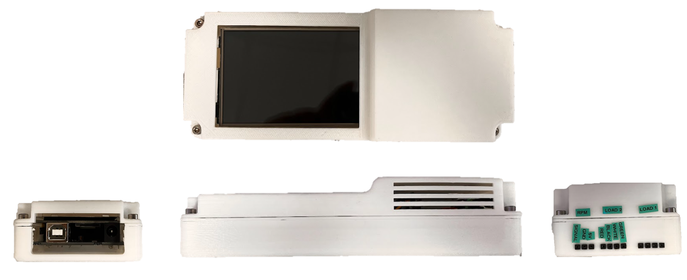

Final Year Project
Summary
This investigation explores the design and development of a dynamometer for the Team Bath Racing electric team at the University of bath. My report focuses on the data logging aspects of the test rig. Designing and programming an Arduino to record and display data relevant to the characteristics of the motor under test. The main characteristics being torque (Nm) and motor speed (RPM). The objectives of this investigation are as follows: To produce a data logger that is accurate in reading newton loads measured by load cells on the dyno, The data logger to accurately measure speed utilising a hall effect sensor, Data to be recorded so that it is easy for post-test manipulation and analysis, and the data logger to be highly accessible and easy to use by all individuals. In order to achieve these objectives, a series of stage gates were created outlining major developments in both the data logger’s hardware and software. The stage gates being a basic test, a display test, a double load cell test, and a final test. The final test produced the results needed to accurately compare the torque and motor speed of the UUT to the requested values of RPM by the controlling VESC software and expected torque values assuming 100% motor efficiency. Comparing these values allowed the accuracy of the data logger to be calculated. The results showed that at a motor speed of over 500 RPM, a 0.05% error in the RPM reading and an 8.71% error in the torque reading obtained by the data logger was found. This investigation concludes that the data logger is successful in accurately outputting and storing the relevant data required from the dynamometer. The design of the software also allows for further future improvements and refinements.
